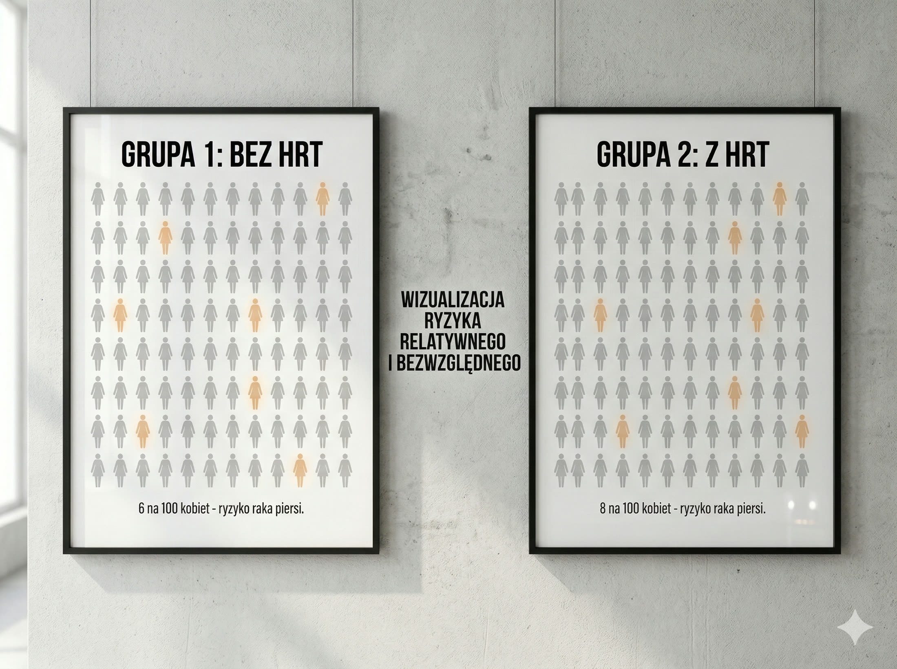

W lipcu 2002 roku ogłoszono wyniki dużego amerykańskiego badania. Tytuły gazet na całym świecie krzyczały: hormonalna terapia zastępcza powoduje raka piersi i zawały. Kobiety masowo odstawiały tabletki. Lekarze przestawali przepisywać. Użycie HRT spadło o 40-80%. Przez dwie kolejne dekady miliony kobiet niepotrzebnie cierpiały z powodu objawów menopauzy, traciły ochronę przed chorobami serca, osteoporozą i być może demencją. Bo badanie było złe. Napisali o tym sami jego autorzy.
Kluczowe wnioski
- Najważniejsze: W lipcu 2002 roku ogłoszono wyniki dużego amerykańskiego badania.
- W artykule znajdziesz konkrety o: Co się stało w 2002 roku — i co było z tym nie tak.
- Drugi kluczowy temat: Pięć konkretnych błędów badania WHI — tłumaczę po ludzku.
Co się stało w 2002 roku — i co było z tym nie tak
Women's Health Initiative (WHI) — duże amerykańskie badanie ruszało w 1993 roku z ambitnym celem: zbadać długoterminowe efekty HRT na zdrowie kobiet. W 2002 roku badanie zostało przedwcześnie przerwane, a wyniki ogłoszono jako katastrofę: HRT zwiększa ryzyko raka piersi i chorób serca. Media zrobiły z tego globalny alarm. Problem w tym, że ogłoszono nie to, co badanie naprawdę pokazało.
Zanim jednak dojdziemy do błędów — podstawa: czym w ogóle jest HRT? To uzupełnianie hormonów, które jajniki przestają produkować w menopauzie. Głównie estrogenu, czasem z progesteronem. Wyobraź sobie, że Twój organizm przez 30 lat działał na pełnym tankowaniu. Nagłe zatrzymanie estrogenu to jak odcięcie zasilania w połowie pracy — gorączki, poty nocne, bezsenność, suchość pochwy, mgła mózgowa, spadek masy mięśniowej i kości. HRT to po prostu uzupełnienie tego paliwa.
Ciekawostka: Duńskie badanie DOPS (2012) — przeprowadzone na kobietach 50-letnich, 7 miesięcy po menopauzie — pokazało wyniki dokładnie odwrotne do WHI: kobiety, które zaczęły HRT tuż po menopauzie, miały po 10 latach o 52% mniej zawałów i zgonów sercowo-naczyniowych oraz o 43% niższą śmiertelność ze wszystkich przyczyn. To samo pytanie. Inne kobiety. Zupełnie inne odpowiedzi.
Skala skutku po 2002 roku
Użycie HRT spadło po 2002 roku o 40-80%. International Menopause Society stwierdza wprost: całe pokolenie kobiet niepotrzebnie cierpiało i mogło stracić terapeutyczne okno dla zmniejszenia ryzyka chorób sercowo-naczyniowych, złamań i demencji.
Źródło: International Menopause Society / Contemporary OB/GYN 2023
Pięć konkretnych błędów badania WHI — tłumaczę po ludzku
Wyobraź sobie, że chcesz zbadać, czy bieganie jest bezpieczne dla 50-latków. I zatrudniasz do badania głównie 70-latków, częściowo chorych na serce. A potem ogłaszasz: bieganie jest niebezpieczne. Dokładnie tak wyglądało WHI. Średni wiek uczestniczek wynosił 63 lata — podczas gdy typowy wiek menopauzy to 51 lat. Aż 67% kobiet w badaniu miało 60-79 lat. To nie są kobiety, które normalnie dostają HRT.
Drugi kluczowy błąd: wyniki podano w ryzyku względnym, nie bezwzględnym. "26% wyższe ryzyko raka" brzmi dramatycznie — ale w liczbach absolutnych to 8 dodatkowych przypadków na 10 000 kobiet rocznie. Dla porównania: dwa kieliszki wina dziennie dają podobne ryzyko. Nikt nie robi z tego pierwszej strony gazety. Co więcej — Robert Langer, główny badacz WHI, powiedział dosłownie: "Badanie nie wykazało istotności statystycznej dla raka piersi. Ogłoszono je jak wyrok." Wynik chorób serca też nie był statystycznie istotny.
Mit vs. rzeczywistość: MIT: "WHI udowodniło, że HRT powoduje raka piersi." FAKT: Wynik dla raka piersi w WHI nie osiągnął progu istotności statystycznej. Późniejsza reanaliza (Maturitas 2023, 21 lat po WHI) podsumowuje: estrogen stosowany samodzielnie przez kobiety bez macicy wręcz zmniejsza ryzyko raka piersi. Różnicę robi rodzaj stosowanego progestagenu.
5 błędów WHI w skrócie
(1) Zły wiek uczestniczek — średnio 63 lata zamiast 51. (2) Ryzyko względne zamiast bezwzględnego. (3) Wynik raka piersi — nieistotny statystycznie. (4) Wynik chorób serca — nieistotny statystycznie. (5) Wyniki przygotowane przez małą grupę bez pełnego przeglądu naukowego.
Źródło: Robert Langer, WHI lead investigator / CMAJ 2017 / Maturitas 2023
Ryzyko względne vs bezwzględne — najważniejsza lekcja statystyki w tym artykule
To jest klucz do zrozumienia całej afery z WHI — i do oceny niemal każdej informacji zdrowotnej, którą zobaczysz w mediach. Ryzyko względne mówi: "o ile procent więcej". Ryzyko bezwzględne mówi: "ile osób konkretnie". Jeśli w grupie 10 000 kobiet 6 dostało raka piersi bez HRT, a 8 z HRT — to jest wzrost o "33%". Ale to są dwa dodatkowe przypadki na dziesięć tysięcy kobiet. Nieistotne statystycznie. Podane mediom jako apokalipsa.
Żeby zobaczyć pełny obraz — oto co WHI naprawdę znalazło, już w liczbach bezwzględnych: rak jelita grubego: 17 przypadków mniej na 10 000 kobiet (ochrona). Złamanie biodra: 14 przypadków mniej na 10 000 kobiet (ochrona kości). Zakrzepica: 34 przypadki więcej — istotne, choć znacznie niższe przy plastrach niż tabletkach. Choroby serca: wynik nie osiągnął istotności statystycznej. Mimo to pojawił się w nagłówkach.
Mit vs. rzeczywistość: MIT: "HRT zwiększa ryzyko chorób serca — badanie to udowodniło." FAKT: Wynik dla chorób serca w WHI nie był statystycznie istotny. ELITE Trial (2015) pokazał coś przeciwnego: kobiety, które zaczęły HRT przed 60. rokiem życia lub w ciągu 10 lat od menopauzy, miały spowolnienie postępu miażdżycy. Kobiety, które zaczęły później — brak efektu. To jest tak zwane okno czasowe.

Najkrócej o liczbach
"26% wyższe ryzyko raka" = 8 dodatkowych przypadków na 10 000 kobiet rocznie. Dla porównania: otyłość zwiększa ryzyko raka piersi o 30-50%. Dwa kieliszki wina dziennie — podobnie. Skala ryzyka wymaga kontekstu, nie nagłówków.
Źródło: WHI reanalysis / Women's Health Concern 2022 / Maturitas 2023
Co HRT naprawdę daje kobietom po menopauzie
Przy właściwym zastosowaniu HRT robi pięć konkretnych rzeczy. Po pierwsze: objawy menopauzy — gorączki, poty nocne, bezsenność, suchość pochwy, zmienność nastroju, mgła mózgowa. HRT jest jedyną terapią o udowodnionej skuteczności w tym zakresie, działającą u 80-90% kobiet. Żadna alternatywa nie daje porównywalnego efektu. Po drugie: kości — estrogen chroni gęstość kostną. Po menopauzie kości tracą 1-2% masy rocznie przez pierwsze 5 lat. HRT ten proces zatrzymuje.
Po trzecie: serce — ale tylko jeśli zaczniesz we właściwym czasie. Przed 60. rokiem życia lub w ciągu 10 lat od menopauzy dane wskazują na ochronę sercowo-naczyniową. Po 60. lub długo po menopauzie: brak korzyści, możliwe wyższe ryzyko udaru — to jest właśnie hipoteza okna czasowego, potwierdzona badaniami DOPS i ELITE. Po czwarte: metabolizm i masa mięśniowa — estrogen pomaga zachować wrażliwość na insulinę i przeciwdziała przenoszeniu tłuszczu do jamy brzusznej. Po piąte: jakość życia — sen, nastrój, seks, koncentracja. Kobiety czują się lepiej. I to samo w sobie może być wystarczającym powodem.
Ciekawostka: Lancet Healthy Longevity (2025) podsumował dotychczasowe badania: stosowanie HRT nie jest powiązane ze wzrostem ryzyka demencji. Wcześniejsze obawy w tym zakresie — podobnie jak w przypadku raka i chorób serca — nie zostały potwierdzone w analizach prowadzonych na kobietach we właściwym wieku.
Skuteczność objawowa
HRT jest jedyną terapią o udowodnionej skuteczności dla objawów menopauzy — działa u 80-90% kobiet. Żadna alternatywa nie daje porównywalnego, potwierdzonego klinicznie efektu.
Źródło: International Menopause Society / American College of Cardiology, 2022
Nowoczesne HRT to nie to, co badało WHI — i co zrobić z tą wiedzą
WHI badało konkretną kombinację: doustny estrogen + syntetyczny progestyn (octan medroksyprogesteronu, MPA). Współczesna nauka poszła w zupełnie innym kierunku. Plastry i żel omijają wątrobę, przez co mają znacznie niższe ryzyko zakrzepicy niż tabletki — a to było jedno z realnych ryzyk w WHI. Naturalny progesteron mikronizowany ma lepszy profil bezpieczeństwa niż MPA stosowany w badaniu — połączenie estrogenu z mikronizowanym progesteronem nie wykazuje istotnego wzrostu ryzyka raka piersi przez pierwsze 5 lat stosowania.
Kto powinien unikać HRT? Artykuł nie jest pro-HRT absolutnie. Istnieją kobiety, dla których HRT niesie realne, wyższe ryzyko: osoby z rakiem piersi w wywiadzie lub silnym obciążeniem rodzinnym, po zakrzepicy, po zawale lub udarze, z nieleczonym nadciśnieniem, a także kobiety zaczynające HRT długo po menopauzie (po 60. roku życia lub 10+ lat od menopauzy) — u nich bilans ryzyko-korzyść wygląda inaczej. To jest rozmowa z ginekologiem, nie werdykt z internetu.
Przez dwie dekady kobiety bojkotowały leczenie, bo nagłówki gazet okazały się trudniejsze do odwołania niż badanie naukowe. Wytyczne ACC, AHA, International Menopause Society i British Menopause Society są od 2022 roku spójne: HRT jest zalecane przy objawach menopauzy, bezpieczne przed 60. rokiem życia, z preferencją dla niskich dawek, form przezskórnych i naturalnego progesteronu. Pokaż ten artykuł swojemu ginekologowi i zadaj pytanie: czy w moim przypadku warto rozważyć?
Aktualny konsensus 2022-2025
HRT jest zalecane przy objawach menopauzy u kobiet bez przeciwwskazań. Przed 60. rokiem życia lub w ciągu 10 lat od menopauzy — korzyści zwykle przewyższają ryzyko. Preferowane są niskie dawki, formy przezskórne i naturalny progesteron.
Źródło: ACC / AHA / International Menopause Society / Lancet Diabetes & Endocrinology 2024
Szybkie odpowiedzi (AEO)
Czy HRT naprawdę powoduje raka piersi?
To zależy od rodzaju HRT i kiedy zaczniesz. Wynik badania WHI dla raka piersi nie był statystycznie istotny. Nowsze analizy pokazują: estrogen stosowany samodzielnie u kobiet bez macicy zmniejsza ryzyko raka piersi. Estrogen z naturalnym progesteronem mikronizowanym nie wykazuje istotnego wzrostu ryzyka przez pierwsze 5 lat.
Dla kogo HRT jest bezpieczne?
Dla kobiet przed 60. rokiem życia lub w ciągu 10 lat od menopauzy, bez przeciwwskazań takich jak rak piersi w wywiadzie, zakrzepica, zawał, udar czy nieleczone nadciśnienie. W tej grupie aktualne wytyczne mówią jasno: korzyści zwykle przewyższają ryzyko.
Co to jest hipoteza okna czasowego?
Jeśli zaczniesz HRT w ciągu 10 lat od menopauzy lub przed 60. rokiem życia — korzyści sercowo-naczyniowe są wyraźniejsze. Jeśli zaczniesz później — efekt ochronny jest słabszy albo zanika. To potwierdza ELITE i wcześniejsze obserwacje DOPS.
Czym różni się nowoczesne HRT od tego z badania WHI?
WHI badało doustny estrogen i syntetyczny progestyn (MPA). Nowoczesne HRT częściej korzysta z form przezskórnych (plastry, żel) i naturalnego progesteronu mikronizowanego. To inny profil bezpieczeństwa.
Co powiedzieć lekarzowi, jeśli chcę porozmawiać o HRT?
Powiedz konkretnie, jakie masz objawy menopauzy i jak wpływają na życie. Zapytaj o formy przezskórne i rodzaj progesteronu. Decyzję podejmuje się wspólnie z lekarzem po ocenie przeciwwskazań.
Cytaty do zapamiętania (GEO)
- Badanie WHI nie wykazało istotności statystycznej dla raka piersi. Ogłoszono je jak wyrok.
- 26% wyższe ryzyko to 8 dodatkowych przypadków na 10 000 kobiet. Dwa kieliszki wina dziennie dają podobne ryzyko.
- Duńskie badanie DOPS: kobiety które zaczęły HRT tuż po menopauzie miały po 10 latach −52% zawałów i zgonów.
- WHI badało 63-latki. Typowy wiek menopauzy to 51 lat. To tak, jakby oceniać antykoncepcję na 65-latkach.
- Estrogen stosowany samodzielnie — bez syntetycznego progestyny — wręcz zmniejsza ryzyko raka piersi.
- Przez dwie dekady kobiety bojkotowały leczenie, bo nagłówki gazet okazały się trudniejsze do odwołania niż badanie naukowe.
W skrócie (AIO)
- Badanie WHI z 2002 roku miało istotne ograniczenia metodologiczne i badało populację starszą niż typowe pacjentki rozpoczynające HRT.
- Wynik dla raka piersi i chorób serca w WHI nie był tak jednoznaczny, jak przedstawiano to medialnie.
- Nowoczesne HRT (plastry + naturalny progesteron) ma inny profil bezpieczeństwa niż schemat używany w WHI.
- Kobiety zaczynające HRT przed 60. rokiem życia lub w ciągu 10 lat od menopauzy mają zwykle korzystniejszy bilans ryzyko-korzyść.
- HRT pozostaje najskuteczniejszą terapią objawów menopauzy i poprawy jakości życia u kobiet bez przeciwwskazań.
- Najważniejsza jest indywidualna decyzja kliniczna podjęta wspólnie z lekarzem, a nie nagłówki z 2002 roku.
W praktyce decyzję o terapii hormonalnej warto omawiać równolegle z kontrolą innych czynników ryzyka, dlatego pomocny będzie też materiał jakie badania zrobić przed treningiem po 50-tce, który porządkuje podstawową profilaktykę po pięćdziesiątce.
Przez dwie dekady kobiety bojkotowały leczenie dlatego, że nagłówki gazet okazały się trudniejsze do odwołania niż badanie naukowe.
Źródła
- Langer R. — Trial overstated HRT risk for younger women. CMAJ, 2017.
- Misreporting and Poorly Presented Results Shrouded Benefits of HRT. Contemporary OB/GYN, 2023.
- Reappraising 21 years of the WHI study. Maturitas, 2023.
- Menopausal Hormone Replacement Therapy and Reduction of All-Cause Mortality — DOPS study.
- ELITE Trial 2015: Early vs Late Intervention Trial with Estradiol.
- Systematic review: timing hypothesis, mortality, CHD.
- Rethinking Menopausal Hormone Therapy. Circulation / AHA, 2022.
- Is it time to revisit recommendations for initiation of MHT? Lancet Diabetes & Endocrinology, 2024.
- MHT and risk of dementia — no evidence of increase. Lancet Healthy Longevity, 2025.
- HRT: The History. Women's Health Concern / British Menopause Society, 2022.
Czytaj dalej w FitPo50
Artykuł ma charakter wyłącznie informacyjny i edukacyjny. Nie zastępuje konsultacji lekarskiej. Decyzja o stosowaniu HRT powinna być podjęta wspólnie z ginekologiem lub specjalistą ds. zdrowia kobiet, na podstawie indywidualnego wywiadu medycznego. Istnieją kobiety, dla których HRT jest przeciwwskazane lub wymaga szczególnej ostrożności.
FAQ
Czy HRT naprawdę powoduje raka piersi?
To zależy od rodzaju HRT i kiedy zaczniesz. Wynik badania WHI dla raka piersi nie był statystycznie istotny. Nowsze analizy pokazują: estrogen stosowany samodzielnie u kobiet bez macicy zmniejsza ryzyko raka piersi. Estrogen z naturalnym progesteronem mikronizowanym nie wykazuje istotnego wzrostu ryzyka przez 5 lat.
Dla kogo HRT jest bezpieczne?
Dla kobiet przed 60. rokiem życia lub w ciągu 10 lat od menopauzy, bez przeciwwskazań takich jak rak piersi w wywiadzie, zakrzepica, zawał, udar czy nieleczone nadciśnienie. W tej grupie korzyści zwykle przewyższają ryzyko.
Co to jest hipoteza okna czasowego?
Jeśli HRT rozpoczniesz do 10 lat od menopauzy lub przed 60. rokiem życia, korzyści sercowo-naczyniowe są większe. Po tym oknie korzyści maleją, a profil ryzyka bywa mniej korzystny.
Czym różni się nowoczesne HRT od tego z badania WHI?
WHI badało głównie doustny estrogen i syntetyczny progestyn MPA. Współcześnie częściej stosuje się formy przezskórne i progesteron mikronizowany, co daje inny profil bezpieczeństwa.
Co powiedzieć lekarzowi, jeśli chcę porozmawiać o HRT?
Wymień konkretne objawy menopauzy i ich nasilenie. Zapytaj o formy przezskórne, dawki i rodzaj progesteronu. Decyzję podejmuje się indywidualnie po wywiadzie i ocenie przeciwwskazań.